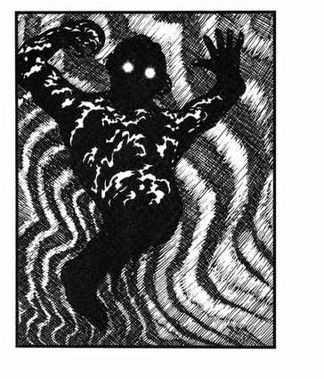

幽影 · Wraith
 |
|
幽影是不死生物，性质类似怨魂，但更强地存在于负能量位面。它们只在黑暗阴郁之地出现，无法承受完全的阳光。除了寒冷触碰造成 1–6 点伤害外，每次命中还会像怨魂一样吸取 1 点生命能量。
幽影只能被银制武器（只造成一半伤害）或魔法武器（造成全额伤害）命中；不受睡眠、魅惑、定身和寒冷法术影响，毒素与麻痹也无效。命中的圣水每瓶造成 2–8 点伤害，死者复生术会杀死幽影。被幽影完全吸干生命能量的人类、矮人、精灵、侏儒、半精灵或半身人，会变成受其控制、力量减半的幽影。